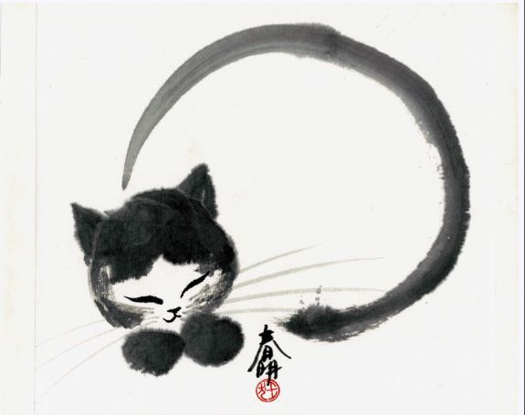
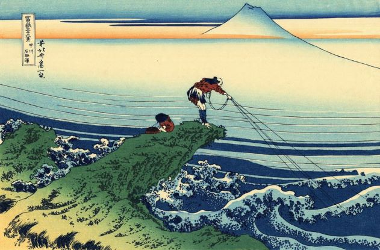

Japanese Art Styles
Japanese art covers a wide range of art styles and media, including ancient pottery, sculpture, ink
painting and calligraphy on silk and paper, ukiyo-e paintings and woodblock prints, ceramics, origami,
and more recently manga which is modern Japanese cartoons and comics along with a myriad of other types.
It has a long history, ranging from the beginnings of human habitation in Japan, sometime in the 10th
millennium BC, to the present-day country.
Painting is the preferred artistic expression in Japan, practiced by amateurs and professionals alike.
Until modern times, the Japanese wrote with a brush rather than a pen, and their familiarity with brush
techniques has made them particularly sensitive to the values and aesthetics of painting. With the rise
of popular culture in the Edo period, a style of woodblock prints became a major form and its techniques
were fine-tuned to produce colorful prints. The Japanese, in this period, found sculpture a much less
sympathetic medium for artistic expression; most large Japanese sculpture is associated with religion,
and the medium's use declined with the lessening importance of traditional Buddhism.
Japanese pottery is among the finest in the world and includes the earliest known Japanese artifacts;
Japanese export porcelain has been a major industry at various points. Japanese lacquerware is also one
of the world's leading arts and crafts, and works gorgeously decorated with maki-e were exported to
Europe and China, remaining important exports until the 19th century. In architecture, Japanese
preferences for natural materials and an interaction of interior and exterior space are clearly
expressed.
Explore

Sumi-e (Brushstroke)
Sumi-e is the Japanese word for black ink painting. It is an over 2000 year old Japanese art
form developed by Zen Buddhist monks. There is a major focus on mental and spiritual clarity
and concentration as part of the practice. Even preparing to paint was a very meditative
routine. In history it was also used as a way to instill the moral values of the Samurai
Code of Conduct. Sumi-e paintings are generally monochrome, or black and white, allowing for
a simplistic style and focus on the subject, which is most often plants, animals and
landscapes.
Manga / Anime
The word manga was first used in the 1790s to describe a book of ukiyo-e illustrations by the
artist Katsushika Hokusai. Until the 1940s, manga was typically only used for children’s
books and political propaganda. During the second world war, the art of manga was influenced
by American cartoons and expanded to cater to a much wider audience with more diverse
themes. The first manga to become very well-known all over the world was Astro Boy by Osamu
Tezuka. 10 to 20 years later, the Japanese animated film industry started to grow and anime,
tv shows and movies drawn in the same style as manga, became popular in Japan and later
globally.

Ukiyo-e (Woodblock Printing)
Ukiyo-e translates to English as “pictures of the floating world”. Wood block printing was a
popular art form during the Tokugawa period (c. 1603–1867) and was used for mass production,
so it was accessible to the working and lower class populations. The artist would first draw
an image, then it would be carved out of wood, painted, then finally printed onto a scroll
or paper, usually with one person performing each different step in a team of four. The
prints often depicted different aspects of Japanese life and culture including portraits of
famous courtesans or actors, birds and flowers, and landscapes.